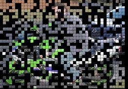

Image Tiles is an API for producing real-time animated mosaics of images.
The API is flexible (lots of options) and can be extended by creating custom tile renderers and animators.

A sample of Image Tiles running can be seen by clicking on the image at the right., although you obviously can't see the animation in a still.
If you don't like what you see, keep in mind that the size, spacing and appearance of the tiles is all configurable.
Planned sub-projects are a screensaver and a slide show.
The main image rendering components of Image Tiles are fully functional, though the project as a whole is still in an alpha stage.
Work is progressing on creating higher-level components that will allow for easy inclusion of Image Tiles into applications, as well implementing a multi-threaded model to improve rendering performance (not that it's bad at the moment).
There is currently one developer working on the framework and another working on more sophisticated renderers and animators.
While we prefer not to hand out committer status until the API becomes a bit more settled and complete, we'd be very happy to receive and integrate contributions of custom renderers and animators.
Some knowledge of Java 2D is definitely required for working on the project, although not too much as I knew almost nothing about it before I started. :)
{kind=link}